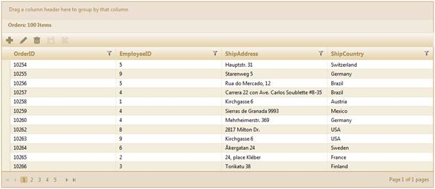

Web service data binding is one of the best features in ASP.NET MVC with rich declarative data binding. This feature allows you to bind the grid to Web services using object data sources. An important advantage of Web services is that they are "cross platform and cross language.”
A grid bound using Web services also enables rich capabilities over data like sorting, paging, filtering, updating, deleting, and inserting—that data-bound UI controls can use automatically.
The main advantages of Web services are platform independence and reusability.
Use Case Scenarios
Multiple users can access the same data source without changing the underlying platform.
Binding the Grid to Web Services in an Application
Through Builder
1. Create a model in the application (Refer to GettingStarted>Adding a Model to the Application).
2. Create a strongly typed view (Refer to How to>Strongly Typed View).
3. Create the Grid control in the view and configure its properties.
4. Set the URL for Web service data binding using the WebService() method.
|
View [ASPX] <%=Html.Grid<Order>("Grid1")
.Caption("Orders") .WebService("/Models/Orders.asmx/RenderOrders") .Column(column => { column.Add(p => p.OrderID).HeaderText("OrderID"); column.Add(p => p.EmployeeID).HeaderText("EmployeeID"); column.Add(p => p.ShipAddress).HeaderText("ShipAddress"); column.Add(p => p.ShipCountry).HeaderText("ShipCountry"); })
.EnablePaging().PageSettings(p => p.PageCount(5)) .EnableSorting() .EnableGrouping().EnableFiltering() .AutoFormat(Skins.Sandune) .ToolBar(tools => { tools.Add(GridToolBarItems.AddNew) .Add(GridToolBarItems.Edit) .Add(GridToolBarItems.Delete) .Add(GridToolBarItems.Update) .Add(GridToolBarItems.Cancel); }) .Editing( edit=>{ edit.AllowEdit(true, "/Models/Orders.asmx/OrderSave") .AllowNew(true, "/Models/Orders.asmx/AddOrder") .AllowDelete(true, "/Models/Orders.asmx/DeleteOrder") .EditMode(GridEditMode.InlineForm) .PrimaryKey(key => key.Add(p => p.OrderID)); })
%> |
|
View [cshtml] @{Html.Grid<Order>("Grid1")
.Caption("Orders") .WebService("/Models/Orders.asmx/RenderOrders") .Column(column => { column.Add(p => p.OrderID).HeaderText("OrderID"); column.Add(p => p.EmployeeID).HeaderText("EmployeeID"); column.Add(p => p.ShipAddress).HeaderText("ShipAddress"); column.Add(p => p.ShipCountry).HeaderText("ShipCountry"); })
.EnablePaging().PageSettings(p => p.PageCount(5)) .EnableSorting() .EnableGrouping().EnableFiltering() .AutoFormat(Skins.Sandune) .ToolBar(tools => { tools.Add(GridToolBarItems.AddNew) .Add(GridToolBarItems.Edit) .Add(GridToolBarItems.Delete) .Add(GridToolBarItems.Update) .Add(GridToolBarItems.Cancel); }) .Editing( edit=>{ edit.AllowEdit(true, "/Models/Orders.asmx/OrderSave") .AllowNew(true, "/Models/Orders.asmx/AddOrder") .AllowDelete(true, "/Models/Orders.asmx/DeleteOrder") .EditMode(GridEditMode.InlineForm) .PrimaryKey(key => key.Add(p => p.OrderID)); })
.Render(); }
|
5. Render the view.
|
Controller public ActionResult Index() { return View(); } |
6. Bind the grid to Web services using object data sources. The Web service method must have a parameter webParams of type WebServiceParams which maintains the current state of the grid for filtering, editing, sorting, paging, and grouping actions. Also, the Web service method should return the GridWebService object.
|
[WebMethod] // The parameter name should be exactly "webParams" public GridWebService RenderOrders(WebServiceParams webParams) { IEnumerable data = new NorthwindDataContext().OrderDetails.Take(100).ToList(); return data.GridWebServiceAction<OrderDetail>(webParams); }
|
 Note: The parameter name must be exactly
“webParams”.
Note: The parameter name must be exactly
“webParams”.
7. Create a WebMethod for updating the records in the editing feature. The Web service method must have parameters webParams of type WebServiceParams and datasourceObj of the particular data source object type. The datasourceObj parameter contains the updated record information.
|
// The parameter names should be exactly "webParams" and “datasourceObj” [WebMethod] public GridWebService OrderSave(WebServiceParams webParams, Order datasourceObj) {
Order result = context.Orders.Single(p => p.OrderID == datasourceObj.OrderID); if (result != null) { result.OrderID = datasourceObj.OrderID; result.EmployeeID = datasourceObj.EmployeeID; result.CustomerID = datasourceObj.CustomerID; result.ShipAddress = datasourceObj.ShipAddress; result.ShipCountry = datasourceObj.ShipCountry; context.SubmitChanges(); } IEnumerable data = new NorthwindDataContext().Orders.Take(100).ToList(); return data.GridWebServiceAction<Order>(webParams); }
|
8. Create a WebMethod for adding records. The Web service method must have parameters webParams of type WebServiceParams and datasourceObj of the particular data source object type. The datasourceObj parameter contains the new record which has to be added.
|
// The parameter names should be exactly "webParams" and “datasourceObj” [WebMethod] public GridWebService AddOrder(WebServiceParams webParams, Order datasourceObj) { context.Orders.InsertOnSubmit(datasourceObj); context.SubmitChanges(); IEnumerable data = new NorthwindDataContext().Orders.Take(100).ToList(); return data.GridWebServiceAction<Order>(webParams); }
|
9. Create a WebMethod for adding records. The Web service method must have parameters webParams of type WebServiceParams and KeyValue of the same type as the primary column. The KeyValue parameter contains the particular record’s primary column value which is used to delete that particular record.
|
// The parameter names should be exactly "webParams" and “KeyValue” [WebMethod] public GridWebService DeleteOrder(WebServiceParams webParams, int KeyValue) { Order order = context.Orders.Single(p => p.OrderID == KeyValue); context.Orders.DeleteOnSubmit(order); context.SubmitChanges(); IEnumerable data = new NorthwindDataContext().Orders.Take(100).ToList(); return data.GridWebServiceAction<Order>(webParams); }
|
10. Run the application. The grid will appear as shown in the following figure:

Figure 99: Grid—Web Service Data Binding
Through GridPropertiesModel
1. Create a model in the application (Refer to Getting Started>Adding a Model to the Application).
2. Add the following code in the Index.aspx file to create the Grid control in the view.
|
View [ASPX] <%=Html.Grid<Order>("Grid1", column=> { column.Add(p => p.OrderID).HeaderText("OrderID"); column.Add(p => p.EmployeeID).HeaderText("EmployeeID"); column.Add(p => p.ShipAddress).HeaderText("ShipAddress"); column.Add(p => p.ShipCountry).HeaderText("ShipCountry"); }));
%> |
|
View [cshtml] @(new HtmlString(Html.Grid<Order>("Grid1", column=> { column.Add(p => p.OrderID).HeaderText("OrderID"); column.Add(p => p.EmployeeID).HeaderText("EmployeeID"); column.Add(p => p.ShipAddress).HeaderText("ShipAddress"); column.Add(p => p.ShipCountry).HeaderText("ShipCountry"); }).ToString() ))
|
3. Create a GridPropertiesModel in the Index method and assign the grid properties in the model.
|
Controller GridPropertiesModel<Order> gridModel = new GridPropertiesModel<Order>() { DataSource = new NorthwindDataContext().Orders, Caption = "Orders", AllowPaging=true, AllowSorting=true, AllowGrouping=true, AutoFormat = Skins.Sandune }; gridModel.WebService = "/Models/Orders.asmx/OrderSave"; gridModel.PageSetting.PageCount = 5;
|
4. Enable editing by using the Editing property in the GridPropertiesModel, and configure the editing properties such as AllowNew, AllowEdit, and AllowDelete as shown in the following code snippet:
|
Controller GridEditing edit = new GridEditing() { AllowEdit = true, AllowDelete = true, AllowNew = true };
// Set the action mappers for insert, delete, and save actions. edit.DeleteMapper = "/Models/Orders.asmx/DeleteOrder"; edit.InsertMapper = "/Models/Orders.asmx/AddOrder"; edit.GridSaveMapper = "/Models/Orders.asmx/OrderSave"; edit.EditMode = GridEditMode.Normal; edit.PrimaryKey = new List<string>() { "OrderID" }; gridModel.Editing = edit; |
5. Essential Grid allows adding new records through grid toolbar items. In this example, AddNew, Edit, Delete, Save, and Cancel buttons have been added as toolbar items as shown in the following code snippet:
|
Controller // Configure the toolbar. ToolbarSettings toolbar = new ToolbarSettings(); toolbar.Enable = true; // Add the add new, edit, delete, save, and cancel buttons in the toolbar. toolbar.Items.Add(new ToolbarOptions() { ItemType=GridToolBarItems.AddNew}); toolbar.Items.Add(new ToolbarOptions() { ItemType = GridToolBarItems.Edit }); toolbar.Items.Add(new ToolbarOptions() { ItemType = GridToolBarItems.Update }); toolbar.Items.Add(new ToolbarOptions() { ItemType = GridToolBarItems.Delete }); toolbar.Items.Add(new ToolbarOptions() { ItemType = GridToolBarItems.Cancel }); gridModel.ToolBar = toolbar; ViewData["Grid1"] = gridModel; return View();
|
6. Bind the grid to a Web service using object data sources. The Web service method must have a parameter webParams of type WebServiceParams which maintains the current state of the grid for filtering, editing, sorting, paging, and grouping actions. Also, the Web service method should return the GridWebService object.
|
[WebMethod] // The parameter name should be exactly "webParams" public GridWebService RenderOrders(WebServiceParams webParams) { IEnumerable data = new NorthwindDataContext().OrderDetails.Take(100).ToList(); return data.GridWebServiceAction<OrderDetail>(webParams); }
|
Note: The parameter name must be
“webParams”.
7. Create a WebMethod for updating records with the editing feature as shown in the following code snippets. The Web service method must have the parameters webParams of type WebServiceParams and datasourceObj of the particular data source object type. The datasourceObj parameter contains the updated record information.
|
// The parameter names should be exactly "webParams" and “datasourceObj” [WebMethod] public GridWebService OrderSave(WebServiceParams webParams, Order datasourceObj) {
Order result = context.Orders.Single(p => p.OrderID == datasourceObj.OrderID); if (result != null) { result.OrderID = datasourceObj.OrderID; result.EmployeeID = datasourceObj.EmployeeID; result.CustomerID = datasourceObj.CustomerID; result.ShipAddress = datasourceObj.ShipAddress; result.ShipCountry = datasourceObj.ShipCountry; context.SubmitChanges(); } IEnumerable data = new NorthwindDataContext().Orders.Take(100).ToList(); return data.GridWebServiceAction<Order>(webParams); }
|
8. Create a WebMethod for adding records. The Web service method must have the parameters webParams of type WebServiceParams and datasourceObj of the particular data source object type. The datasourceObj parameter contains the new record which has to be added.
|
// The parameter names should be exactly "webParams" and “datasourceObj” [WebMethod] public GridWebService AddOrder(WebServiceParams webParams, Order datasourceObj) { context.Orders.InsertOnSubmit(datasourceObj); context.SubmitChanges(); IEnumerable data = new NorthwindDataContext().Orders.Take(100).ToList(); return data.GridWebServiceAction<Order>(webParams); }
|
9. Create a WebMethod for adding records as shown in the following code snippets. The Web service method must have the parameters webParams of type WebServiceParams and KeyValue of the same type as the primary column. The KeyValue parameter contains the particular record’s primary column value which is used to delete that particular record.
|
// The parameter names should be exactly "webParams" and “KeyValue” [WebMethod] public GridWebService DeleteOrder(WebServiceParams webParams, int KeyValue) { Order order = context.Orders.Single(p => p.OrderID == KeyValue); context.Orders.DeleteOnSubmit(order); context.SubmitChanges(); IEnumerable data = new NorthwindDataContext().Orders.Take(100).ToList(); return data.GridWebServiceAction<Order>(webParams); }
|
10. Run the application. The grid will appear as shown in the following figure:
Figure 100: Grid—Web service data binding
Properties
|
Property |
Description |
Type of property |
Value it accepts |
Any other dependencies/sub-properties associated |
|
WebService |
Gets or sets the URL for binding the grid to a Web service using object data source. |
string |
string |
NA |
Sample Link
To access the sample:
1. Go to the Grid MVC Demos in the sample browser.
2. Select the Data Binding option in the menu.
3. Select the Web Service Binding to view the complete Web Service Binding demo.